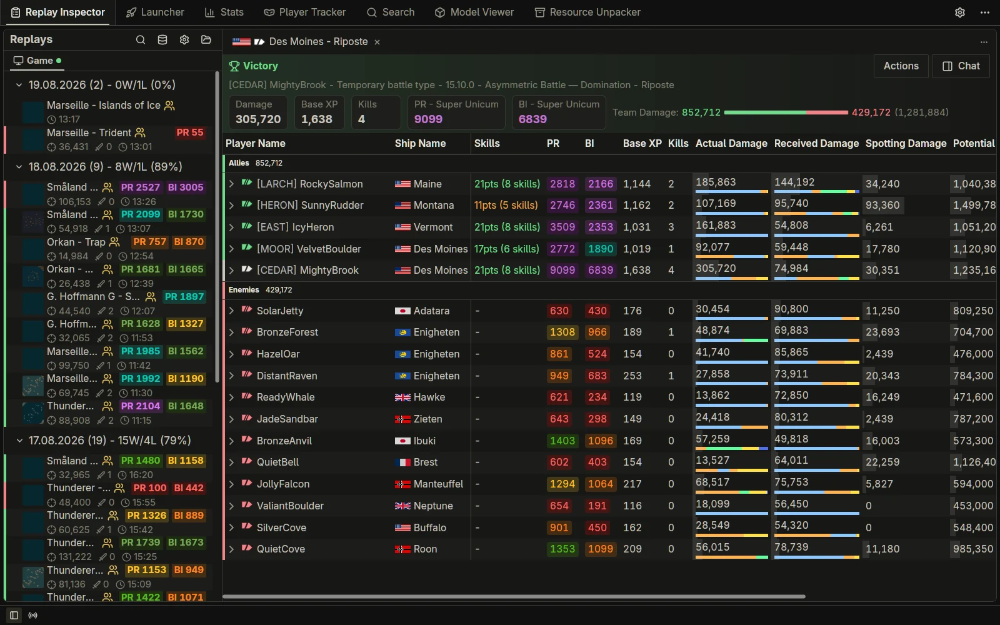
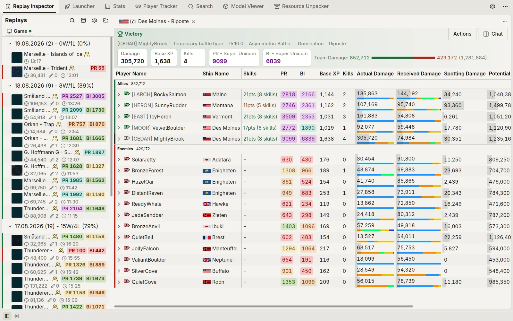

Replays
Replay inspector
Post-battle statistics for every player in a replay.
- Damage dealt and received by type: AP, HE, SAP, fire, flooding, torpedoes
- Spotting damage, potential damage, ribbons, and achievements
- Builds, captain skills, and consumables for both teams
- Damage between each pair of players
- Chat log and match export

